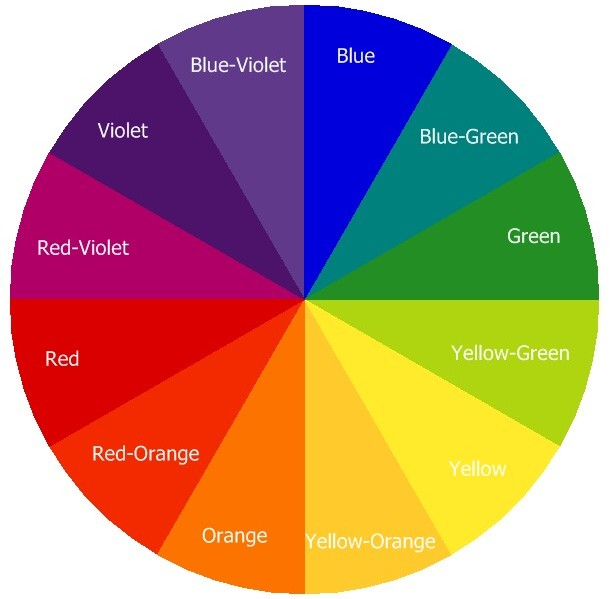
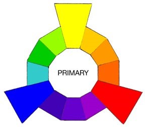
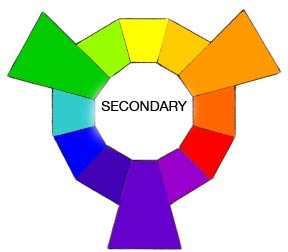

Elementary School
COLOR
What is a color?
To see color, you have to have light. When light shines on an object some colors bounce off the object and others are absorbed by it. Our eyes only see the colors that are bounced off or reflected. The sun’s rays contain all the colors of the rainbow mixed together. This mixture is known as white light. When white light strikes a white crayon or marker barrel, it appears white to us because it absorbs no color and reflects all color equally. A black crayon or marker cap absorbs all colors equally and reflects none, so it looks black to us. While artists consider black a color, scientists do not because black is the absence of all color.
All light rays contain color. Light is made of electromagnetic waves. These waves spread out from any light source, such as the sun. Light waves travel at tremendous speed (186,000 miles or 300,000 kilometers per second). Different colors have different wavelengths, which is the distance between corresponding parts of two of the waves. The longest wavelength of light that humans can see is red. The shortest is violet. Ultraviolet has an even shorter wavelength, but humans cannot see it. Some birds and bees can see ultraviolet light. Infrared has a longer wavelength than red light, and humans can not see this light but can feel the heat infrared generates.
Primary Colors
In theory, the Primary Colors are the root of every other hue imaginable. The primary pigments used in the manufacture of paint come from the pure source element of that Hue. There are no other pigments blended in to alter the formula. Think of the three Primaries as the Parents in the family of colors. In paint pigments, pure Yellow, pure Red, and pureBlue are the only hues that can’t be created by mixing any other colors together. Printer inks and digital primaries are referred to as Yellow, Magenta and Cyan.
Secondary Colors
When you combine any two of the Pure Primary Hues, you get three new mixtures called Secondary Colors. Think of the three Secondaries as the Children in the family of colors. Yellow + Red = ORANGE Red + Blue = VIOLET or PURPLE Blue + Yellow = GREEN
Tertiary Colors
When you mix a Primary and its nearest Secondaryon the Basic Color Wheel you createsix new mixtures called Tertiary colors. Think of the six Tertiary Colors as the Grandchildrenin the family of colors, since their genetic makeup combines a Primary and Secondary color.
- Yellow + Orange = YELLOW-ORANGE
- Red + Orange = RED-ORANGE
- Red + Violet = RED-VIOLET
- Blue + Violet = BLUE-VIOLET
- Blue + Green = BLUE-GREEN
- Yellow + Green = YELLOW-GREEN
This totals twelve basic colors that allows you to mix an endless variety of hues, tints, tones and shades. Most artists don’t actually mix every color themselves from scratch. It’s far simpler to work with astandard palette of six or twelve pre-mixed paint tubes. Just keep them as pure and unmixed as possible.
This world is but a canvas to our imagination.